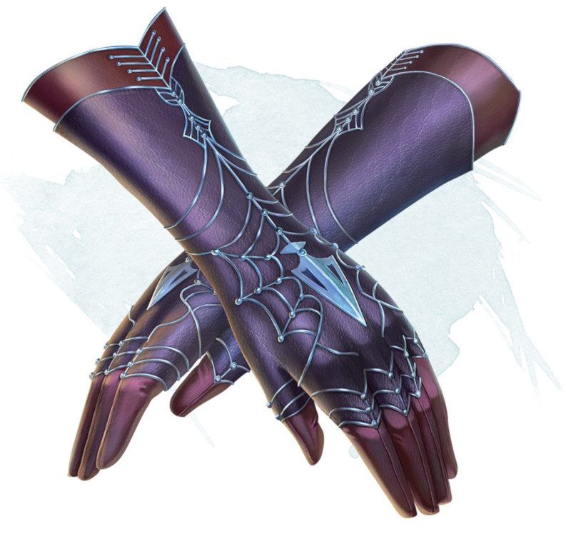

Gloves of Missile Snaring
Wondrous item, uncommon (requires attunement)
These gloves seem to almost meld into your hands when you don them. When a ranged weapon attack hits you while you're wearing them, you can use your reaction to reduce the damage by 1d10 + your Dexterity modifier, provided that you have a free hand. If you reduce the damage to 0, you can catch the missile if it is small enough for you to hold in that hand.
Dungeon Master´s Guide (SRD)
